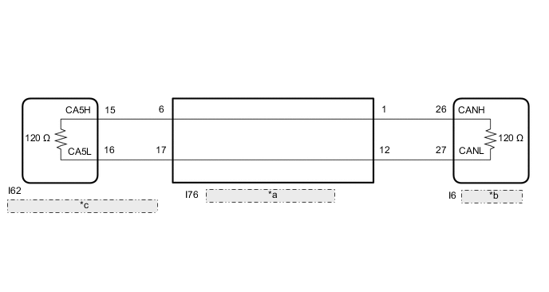
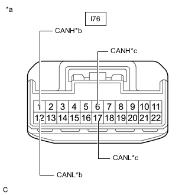
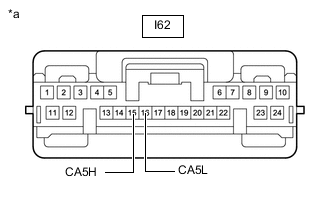
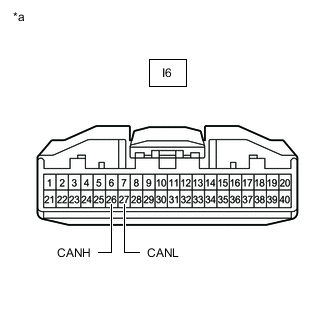

CAN COMMUNICATION SYSTEM Open in Bus 5 Main Bus Line
DESCRIPTION
There may be an open circuit in one of the CAN main bus lines when the resistance between terminals 15 (CA5H) and 16 (CA5L) of the central gateway ECU (network gateway ECU) is 70 Ω or higher.
| Symptom | Trouble Area |
|---|---|
| Resistance between terminals 15 (CA5H) and 16 (CA5L) of the central gateway ECU (network gateway ECU) is 70 Ω or higher. |
|
This malfunction is not related to the lines of a CAN branch or to ECUs or sensors connected to a CAN branch.
WIRING DIAGRAM

| *a | No. 3 CAN Junction Connector |
| *b | Meter Circuit Plate |
| *c | Central Gateway ECU (Network Gateway ECU) |
CAUTION / NOTICE / HINT
Note
-
Because the order of diagnosis is important to allow correct diagnosis, make sure to begin troubleshooting using How to Proceed with Troubleshooting when CAN communication system related DTCs are output.
-
Before measuring the resistance of the CAN bus, turn the power switch off and leave the vehicle for 1 minute or more without operating the key or any switches, or opening or closing the doors. After that, disconnect the cable from the negative (-) auxiliary battery terminal and leave the vehicle for 1 minute or more before measuring the resistance.
-
After turning the power switch off, waiting time may be required before disconnecting the cable from the negative (-) auxiliary battery terminal. Therefore, make sure to read the disconnecting the cable from the negative (-) auxiliary battery terminal notices before proceeding with work.
-
After performing repairs, perform the DTC check procedure and confirm that the DTCs are not output again.
DTC check procedure: Turn the power switch on (IG) and wait at least approximately 33 seconds. Turn the blind spot monitor system on using the blind spot monitor main switch (ON/OFF switch), turn the lane departure alert main switch on and wait for approximately 52 seconds or more.
-
After the repair, perform the CAN bus check and check that all the ECUs and sensors connected to the CAN communication system are displayed as normal.
Tech Tips
-
Before disconnecting related connectors for inspection, push in on each connector body to check that the connector is not loose or disconnected.
-
When a connector is disconnected, check that the terminals and connector body are not cracked, deformed or corroded.
PROCEDURE
-
CHECK FOR OPEN IN CAN MAIN BUS LINES (NO. 3 CAN JUNCTION CONNECTOR)
-
Disconnect the cable from the negative (-) auxiliary battery terminal.
-
Disconnect the I76 No. 3 CAN junction connector.
-

*a Front view of wire harness connector
(to No. 3 CAN Junction Connector)
*b to Meter Circuit Plate *c to Central Gateway ECU (Network Gateway ECU) Measure the resistance according to the value(s) in the table below.
Standard Resistance Tester Connection Condition Specified Condition Connected to I76-1 (CANH) - I76-12 (CANL) Cable disconnected from negative (-) auxiliary battery terminal 108 to 132 Ω Meter circuit plate I76-6 (CANH) - I76-17 (CANL) Cable disconnected from negative (-) auxiliary battery terminal 108 to 132 Ω Central gateway ECU (network gateway ECU) Result Result Proceed to OK A NG (Line to central gateway ECU (network gateway ECU)) B NG (Line to meter circuit plate) C
A 
REPLACE NO. 3 CAN JUNCTION CONNECTOR
C 
CHECK FOR OPEN IN CAN MAIN BUS LINES (METER CIRCUIT PLATE - NO. 3 CAN JUNCTION CONNECTOR) Click here
B 
-
-
CHECK FOR OPEN IN CAN MAIN BUS LINES (CENTRAL GATEWAY ECU (NETWORK GATEWAY ECU) - NO. 3 CAN JUNCTION CONNECTOR)
-
Reconnect the I76 No. 3 CAN junction connector.
-
Disconnect the I62 central gateway ECU (network gateway ECU) connector.
-

*a Front view of wire harness connector
(to Central Gateway ECU (Network Gateway ECU))
Measure the resistance according to the value(s) in the table below.
Standard Resistance Tester Connection Condition Specified Condition I62-15 (CA5H) - I62-16 (CA5L) Cable disconnected from negative (-) auxiliary battery terminal 108 to 132 Ω Result Result OK NG
OK
REPLACE CENTRAL GATEWAY ECU (NETWORK GATEWAY ECU) Click here
NG
REPAIR OR REPLACE CAN MAIN BUS LINES OR CONNECTOR (CENTRAL GATEWAY ECU (NETWORK GATEWAY ECU) - NO. 3 CAN JUNCTION CONNECTOR)
-
-
CHECK FOR OPEN IN CAN MAIN BUS LINES (METER CIRCUIT PLATE - NO. 3 CAN JUNCTION CONNECTOR)
-
Reconnect the I76 No. 3 CAN junction connector.
-
Disconnect the I6 meter circuit plate connector.
-

*a Front view of wire harness connector
(to Meter Circuit Plate)
Measure the resistance according to the value(s) in the table below.
Standard Resistance Tester Connection Condition Specified Condition I6-26 (CANH) - I6-27 (CANL) Cable disconnected from negative (-) auxiliary battery terminal 108 to 132 Ω Result Result OK NG
OK
REPLACE METER CIRCUIT PLATE Click here
NG
REPAIR OR REPLACE CAN MAIN BUS LINES OR CONNECTOR (METER CIRCUIT PLATE - NO. 3 CAN JUNCTION CONNECTOR)
-